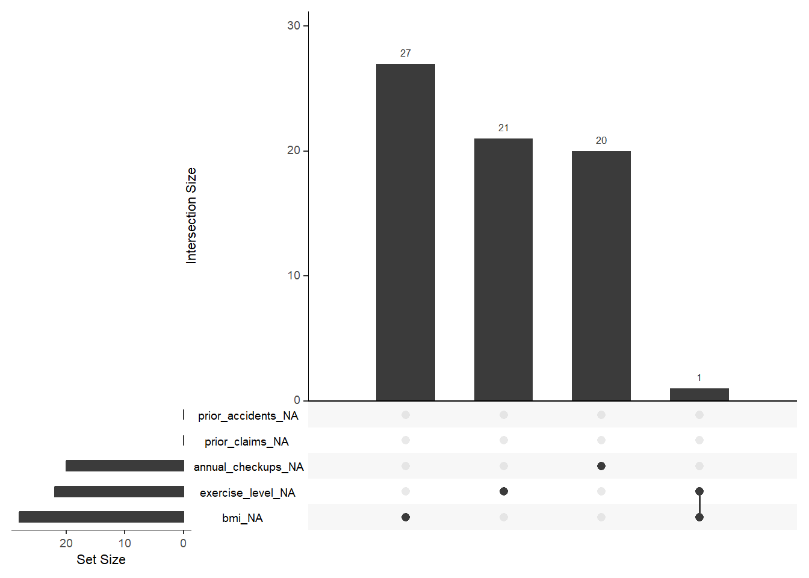
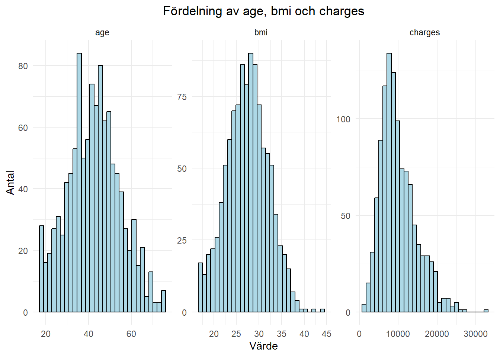
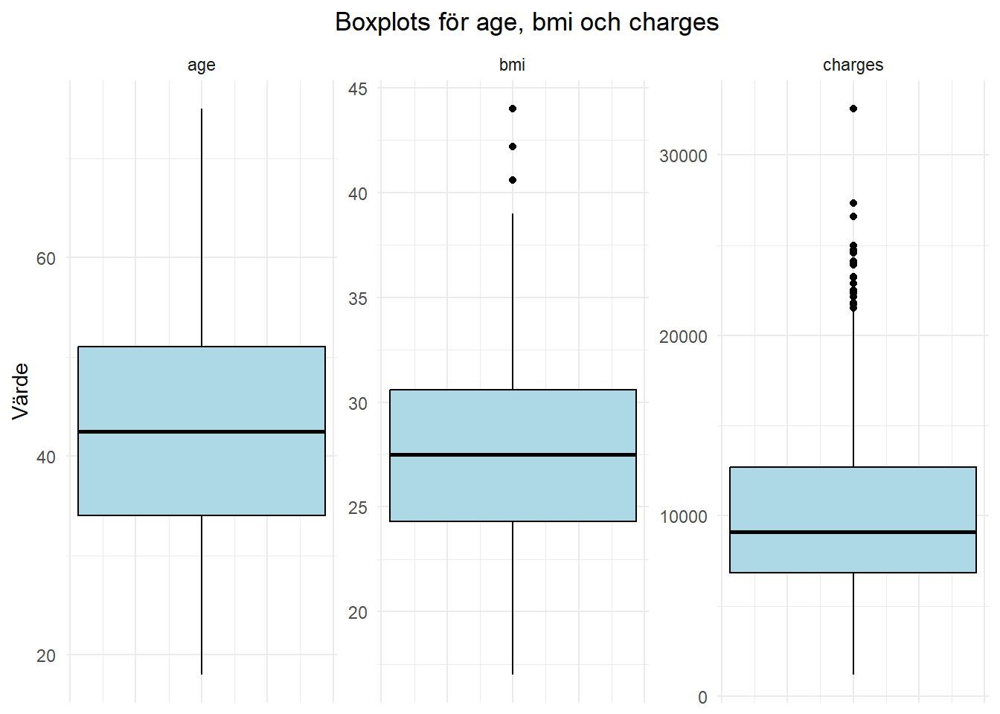

library(knitr)
library(tidyverse)
library(naniar)
library(ggcorrplot)
library(modelsummary)
library(broom)
read_chunk("scripts/01_load_data.R")
read_chunk("scripts/02_prepare_data.R")
read_chunk("scripts/03_descriptive_analysis.R")
read_chunk("scripts/04_regression_analysis.R")Analys av försäkringskostnader
Skriv kort om setup-blocket.
Inledning
Skriv inledningstext här
Dataförståelse
Ladda in data
data_raw <- read_csv("data/insurance_costs.csv", show_col_types = FALSE)Storlek, struktur och variabeltyper
glimpse(data_raw)Rows: 1,100
Columns: 14
$ customer_id <chr> "C100000", "C100001", "C100002", "C100003", "C100004…
$ age <dbl> 48, 40, 50, 62, 39, 39, 63, 52, 36, 49, 36, 36, 45, …
$ sex <chr> "female", "male", "female", "male", "female", "femal…
$ region <chr> "east", "west", "south", "north", "east", "west", "e…
$ bmi <dbl> 24.8, 29.5, 18.3, 25.5, 27.3, 23.3, 23.9, 24.8, 28.6…
$ children <dbl> 0, 1, 2, 5, 2, 4, 3, 2, 0, 2, 2, 2, 1, 1, 1, 1, 0, 3…
$ smoker <chr> "no", "no", "no", "yes", "no", "no", "no", "no", "no…
$ chronic_condition <chr> "no", "no", "no", "no", "no", "no", "no", "no", "yes…
$ exercise_level <chr> "high", "medium", "high", "medium", "medium", "high"…
$ plan_type <chr> "basic", "basic", "standard", "basic", "basic", "sta…
$ prior_accidents <dbl> 0, 0, 0, 0, 0, 0, 0, 0, 0, 1, 0, 1, 0, 0, 0, 0, 0, 0…
$ prior_claims <dbl> 0, 1, 0, 0, 1, 0, 0, 0, 1, 0, 0, 1, 0, 1, 3, 0, 0, 0…
$ annual_checkups <dbl> 1, 4, 3, NA, 0, 2, 1, 2, 3, 2, 3, 3, 4, 4, 2, 1, 2, …
$ charges <dbl> 6439.10, 8274.06, 5190.99, 14500.35, 6534.40, 8026.3…Datasetet består av 1100 rader (observationer) och 14 kolumner.
En rad är en kund.
Kategoriska variabler:
customer_id
sex
region
smoker
chronic_condition
exercise_level
plan_type
Numeriska variabler:
age
bmi
children
prior_accidents
prior_claims
annual_checkups
charges
Dubbletter
Identiska rader
data_raw %>%
duplicated() %>%
sum()[1] 0duplicated() kollar vilka rader som är dubbletter och returnerar en logisk lista med TRUE och FALSE. sum() summerar alla värden i listan, men då TRUE = 1 och FALSE = 0 så är det antalet TRUE som blir resultatet. I det här fallet är antalet identiska rader 0.
Förekommer samma kund flera gånger?
data_raw %>%
count(customer_id) %>%
filter(n > 1)# A tibble: 0 × 2
# ℹ 2 variables: customer_id <chr>, n <int>count() räknar varje customer_id och lägger resultatet i en tabell med kolumnerna customer_id och n (antal). filter(n > 1) tar sedan fram de rader där n är större än 1. Resultatet är en tibble med 0 rader, dvs samma customer_id finns inte med fler än en gång.
Samma kunddata, men olika id:n
data_raw %>%
select(-customer_id) %>%
duplicated() %>%
sum()[1] 0Här används duplicated() igen för att kolla vilka rader som är dubbletter, men customer_id är borträknat. Även här är resultatet en tom lista.
Jag undersökte dubblerad data på tre sätt:
Identiska rader
Samma kund på flera ställen
Samma kund med olika id:n
Dubbletter gör datan skev och inte lika tillförlitlig. Identiska rader är lätta att hantera: en av raderna tas bort. Om samma kund finns på flera ställen, antingen med samma id och olika data eller med exakt samma data fast olika id:n tyder detta på inkonsekvenser vid datalagringen. Detta går inte hantera utan att först kolla med den som äger systemet som datan kommer ifrån. Har en ny kund av misstag fått ett upptaget id? Har en gammal kund av misstag skapats igen? Eller är det mot all förmodan så att två separata individer har exakt samma värden i samtliga variabler? Detta kan ägaren till systemet svara på, men går det inte att få något svar får all duplicering tas bort.
Som tur är innehåller detta dataset inga dubbletter.
Saknade värden
data_raw %>%
summarise(across(everything(), ~ sum(is.na(.)))) %>%
pivot_longer(everything()) %>%
mutate(andel = value / nrow(data_raw) * 100) %>%
arrange(desc(andel))# A tibble: 14 × 3
name value andel
<chr> <int> <dbl>
1 bmi 28 2.55
2 exercise_level 22 2
3 annual_checkups 20 1.82
4 customer_id 0 0
5 age 0 0
6 sex 0 0
7 region 0 0
8 children 0 0
9 smoker 0 0
10 chronic_condition 0 0
11 plan_type 0 0
12 prior_accidents 0 0
13 prior_claims 0 0
14 charges 0 0 summarise() skapar en sammanfattning av datasetet och resultatet blir en ny, mindre tabell.
across() betyder “gör samma sak över flera kolumner” och det som ska göras är sum(is.na()), alltså summera alla NA.
everything() gör så att funktionen körs på alla kolumner. Punkten i na(.) är en placeholder för varje kolumn.
pivot_longer() gör om tabellen från “bred” till “lång”. Utan pivot_longer() blir tabellen ungefär så här:
| customer_id | bmi | age | prior_claims |
| 0 | 3 | 0 | 2 |
Men med pivot_longer() blir tabellen ännu mer sammanfattande:
| name | value |
| customer_id | 0 |
| bmi | 3 |
| age | 0 |
| prior_claims | 2 |
Dvs att varje “orginalkolumn” hamnar i en ny kolumn “name” och antalet NA per kolumn hamnar i den nya kolumnen “value”.
mutate() skapar ytterligare en kolumn “andel” som beräknar andelen NA per variabel.
arrange() sorterar tabellen så variabeln med högst andel saknade värden ligger överst.
Resultatet blir som sagt en ny tabell och i det här fallet kan vi se att det finns NA i tre variabler: bmi, exercise_level och annual_checkups med totalt 70 NA. Dessa behöver hanteras i nästa del: Dataförberedelse.
Finns det observationer med fler än en NA?
Men är det 70 separata observationer som har NA:s eller finns det observationer som har NA i fler än en variabel?
Det här är relevant att veta inför hanteringen av NA. Om man väljer att ta bort alla rader med NA är det 70 observationer som försvinner eller bara 5?
gg_miss_upset(data_raw)
gg_miss_upset() är en funktion från paketet naniar. Det den gör är i princip samma sak som ovan - räknar saknade värden per kolumn och summerar - men gg_miss_upset() hittar också kombinationer av NA:s som förekommer tillsammans och ritar alltihopa i en snygg plot.
Av figuren kan vi utläsa att endast en observation har fler än en NA och att de är i variablerna bmi och exercise_level som dessa sakande värden förekommer.
Detta innebär att om NA:s hanteras genom radering så kommer 69 observationer försvinna.
Inkonsekvenser
Kategoriska variabler
data_raw %>%
select(where(is.character), -customer_id) %>%
pivot_longer(everything()) %>%
distinct(name, value) %>%
group_by(name) %>%
summarise(
kategorier = paste(value, collapse = ", ")
)# A tibble: 6 × 2
name kategorier
<chr> <chr>
1 chronic_condition no, yes
2 exercise_level high, medium, low, NA
3 plan_type basic, standard, premium, Premium, Standard
4 region east, west, south, north, North, South
5 sex female, male
6 smoker no, yes, Yes select(where(is.character), -customer_id) väljer alla kategoriska variabler förutom customer_id (för den är inte av intresse)
distinct() plockar ut alla unika värden ur både name (variabel) och value (kategorier inom variablerna). group_by() slår sedan ihop dem per kolumn.
summarise() skapar en sammanfattande kolumn - “kategorier” - där alla värden i value slås ihop till en enda textsträng, där varje value separeras av ett kommatecken.
Inkonsekvenser i kategoriska variabler är exempelvis olika stavningar för samma sak, eller att ett ord ibland börjar med stor bokstav och ibland med liten bokstav. I tabellen framgår det att dessa inkonsekvenser finns i datasetet och detta kommer hanteras i avsnittet “Datastädning”.
Numeriska variabler
data_raw %>%
select(where(is.numeric)) %>%
summary() age bmi children prior_accidents
Min. :18.00 Min. :17.00 Min. :0.000 Min. :0.0000
1st Qu.:34.00 1st Qu.:24.30 1st Qu.:0.000 1st Qu.:0.0000
Median :42.50 Median :27.50 Median :1.000 Median :0.0000
Mean :42.51 Mean :27.43 Mean :1.575 Mean :0.2382
3rd Qu.:51.00 3rd Qu.:30.60 3rd Qu.:3.000 3rd Qu.:0.0000
Max. :75.00 Max. :44.00 Max. :5.000 Max. :3.0000
NA's :28
prior_claims annual_checkups charges
Min. :0.0000 Min. :0.00 Min. : 1204
1st Qu.:0.0000 1st Qu.:1.00 1st Qu.: 6837
Median :0.0000 Median :2.00 Median : 9124
Mean :0.2718 Mean :2.09 Mean :10060
3rd Qu.:0.0000 3rd Qu.:3.00 3rd Qu.:12710
Max. :3.0000 Max. :4.00 Max. :32559
NA's :20 För att få fram inkonsekvenser i de numeriska variablerna väljer jag att göra en summary() på data_raw, men bara på “is.numeric”.
Inkonsekvenser i numeriska variabler är exempelvis negativa tal på ställen där det inte är realistiskt möjlig, som exempelvis age, bmi eller annual_checkups. Orimligt höga värden är också inkonsekvenser. Än så länge finns det ingen människa äldre än 120 år eller som har ett bmi på över 180 (#JonBrowerMinnoch #Murica)
Men den främsta användningen av summary() är att kolla datans fördelning, skevhet och outliers.
Charges:
Medelvärdet högre än medianen. Tyder på högerskev fördelning.
Maxvärdet är mer än 2,5 gånger större än 3:e kvartilen. Tyder på outliers i den övre delen av spektrat.
BMI:
Medelvärdet och medianen är nästan exakt lika stora. Tyder på normalfördelning.
1:a kvartilen börjar på 24,30 vilket innebär att 75 % av populationen ligger i kategorin övervikt eller fetma (BMI > 25)
Age:
Medelvärdet och medianen är nästan identiska. Tyder på normalfördelning.
Avståndet mellan kvartilerna är relativt konstant vilket innebär en jämn spridning mellan åldrarna
Fördelning
Kategoriska variabler
data_raw %>%
select(where(is.character), -customer_id) %>%
pivot_longer(everything()) %>%
count(name, value) %>%
group_by(name) %>%
mutate(andel = n / sum(n) * 100) %>%
arrange(desc(n), .by_group = TRUE) %>%
print(n = Inf)# A tibble: 22 × 4
# Groups: name [6]
name value n andel
<chr> <chr> <int> <dbl>
1 chronic_condition no 832 75.6
2 chronic_condition yes 268 24.4
3 exercise_level medium 561 51
4 exercise_level low 307 27.9
5 exercise_level high 210 19.1
6 exercise_level <NA> 22 2
7 plan_type standard 549 49.9
8 plan_type basic 339 30.8
9 plan_type premium 201 18.3
10 plan_type Premium 7 0.636
11 plan_type Standard 4 0.364
12 region south 315 28.6
13 region west 264 24
14 region north 255 23.2
15 region east 253 23
16 region North 8 0.727
17 region South 5 0.455
18 sex female 551 50.1
19 sex male 549 49.9
20 smoker no 896 81.5
21 smoker yes 200 18.2
22 smoker Yes 4 0.364Inför analys är det alltid viktigt att veta hur stora de olika grupperna är.
I den här tabellen kan vi exempelvis se att ungefär 25 % av populationen har ett kroniskt tillstånd och att fördelningen mellan män och kvinnor är jämn.
Numeriska variabler
hist_plot_eda <- data_raw %>%
select(age, bmi, charges) %>%
pivot_longer(everything()) %>%
ggplot(aes(x = value)) +
geom_histogram(bins = 30, fill = "lightblue", color = "black") +
facet_wrap(~name, scales = "free") +
labs(
title = "Fördelning av age, bmi och charges",
x = "Värde",
y = "Antal"
) +
theme_minimal() +
theme(plot.title = element_text(hjust = 0.5))Här gör pivot_longer(everything()) att ggplot() kan rita alla tre variabler samtidigt. Alla värden från bmi, age och charges ligger i value.
facet_wrap() skapar en separat graf för varje variabel i name.
scales = “free” gör att varje graf får egna axelskalor vilket är ett måste eftersom charges innehåller så mycket större värden jämfört med age och bmi.
theme_minimal() ger graferna ett enklare och renare utseende.
element_text(hjust = 0.5) centrerar rubriken.
hist_plot_eda
Figuren bekräftar det vi misstänkte tidigare:
Charges är högerskev med en tydlig svans av outliers vid höga värden.
BMI följer en normalfördelning
Men Age har en mer oregelbunden fördelning med flera toppar, en vid 35-40 och en vid 45-50 år. Detta tyder på en ojämn representation av åldersgrupper i datan.
box_plot_eda <- data_raw %>%
select(age, bmi, charges) %>%
pivot_longer(everything()) %>%
ggplot(aes(y = value)) +
geom_boxplot(fill = "lightblue", color = "black") +
facet_wrap(~name, scales = "free") +
labs(
title = "Boxplots för age, bmi och charges",
x = NULL,
y = "Värde"
) +
theme_minimal() +
theme(plot.title = element_text(hjust = 0.5),
axis.text.x = element_blank(),
axis.ticks.x = element_blank()
)På samma sätt som med histogrammet plottas en facetterad boxplot.
Då x-axeln inte är av intresse tas denna bort med axis.text.x = blank och axis.ticks.x = blank.
box_plot_eda
Figuren bekräftar att det finns flertalet outliers inom Charges. Många runt 25 000, men även en över 30 000. Boxploten bekräftar också att fördelningen är högerskev. Detta ser vi då boxen ligger långt ner i förhållande till maxvärdet.
För BMI syns nu tydligt att det finns några outliers i det övre spannet, men för övrigt är fördeningen inom BMI symmetrisk.
Age har inga outliers och boxen är stor och centralt placerad vilket visar på bra spridning av observationer i åldrarna 35-50 år.
Datastädning och förberedelse
Funktion för att få typvärdet (mode)
get_mode <- function(x) {
ux <- unique(na.omit(x))
ux[which.max(tabulate(match(x, ux)))]
}I föregående avsnitt upptäckte vi att exercise_level innehöll 22 NA:n och att 22 observationer motsvarar 2 % av hela datan. Vi kunde också se att exercise_level bestod av 3 kategorier: low, medium och high med en rimlig fördelning inom kategorierna (low = 307, medium = 561 och high = 210 observationer).
Eftersom datasetet redan är litet är jag motvillig att ta bort något. Eftersom kategorin medium redan var så stor valde jag att ersätta alla saknade värden i exercise_level med det vanligaste, medium. Men för att göra koden säker inför framtiden då datan kan ändras skapade jag en funktion som tar fram det vanligaste värdet (mode) istället för att hårdkoda.
Städa och feature engineering i samma pipe
data_clean <- data_raw %>%
mutate(
# Standardisera text
across(where(is.character), ~str_to_lower(str_trim(.))),
# Hantera saknade värden
bmi = if_else(
is.na(bmi),
median(bmi, na.rm = TRUE),
bmi),
annual_checkups = if_else(
is.na(annual_checkups),
median(annual_checkups, na.rm = TRUE),
annual_checkups),
exercise_level = if_else(
is.na(exercise_level),
get_mode(exercise_level),
exercise_level),
# Logiska variabler för beräkningar
smoker_logic = recode(smoker, "yes" = TRUE, "no" = FALSE),
chronic_condition_logic = recode(chronic_condition, "yes" = TRUE, "no" = FALSE),
# Nya variabler
bmi_category = case_when(
bmi < 18.5 ~ "underweight",
bmi < 25.0 ~ "normal",
bmi < 30.0 ~ "overweight",
TRUE ~ "obese"
),
age_category = case_when(
age < 35 ~ "young",
age < 55 ~ "middle-aged",
TRUE ~ "senior"
),
prior_events = prior_accidents + prior_claims,
risk_score =
as.integer(smoker_logic) +
as.integer(chronic_condition_logic) +
if_else(bmi >= 30, 1, 0),
# Kategoriska variabler till faktorer
smoker = factor(smoker_logic, levels = c(FALSE, TRUE), labels = c("no", "yes")),
chronic_condition = factor(chronic_condition_logic, levels = c(FALSE, TRUE), labels = c("no", "yes")),
region = as.factor(region),
exercise_level = factor(exercise_level, levels = c("low", "medium", "high")),
plan_type = factor(plan_type, levels = c("basic", "standard", "premium")),
sex = as.factor(sex),
bmi_category = factor(bmi_category, levels = c("underweight", "normal", "overweight", "obese")),
age_category = factor(age_category, levels = c("young", "middle-aged", "senior"))
) %>%
select(-smoker_logic, -chronic_condition_logic)Följande städning görs (med utgångspunkt i det som tidigare avsnitt visade):
Alla kategoriska variabler standardiseras, dvs alla mellanslag tas bort och alla bokstäver görs om till gemener
Saknade värden i bmi och annual_checkups ersätts med medianvärdet då detta inte “skjuter” datan åt ett specifikt håll. exercise_level NA:ns ersätts som sagt med det vanligaste värdet mha av funktionen get_mode.
Skapande av nya variabler, val och motivering:
bmi_category och age_category
kategorier ger minskat brus och fångar tröskeleffekter: slumpmässiga variationer mellan exempelvis en 66-åring och 68-åring eller mellan ett bmi på 21 och ett bmi på 23 försvinner när observationerna grupperas, och ger istället en tydligare struktur som är lättare att tolka.
bmi_category följer WHO:s etablerade standarder
prior_events
prior_accidents och prior_claims säger egentligen samma sak (“saker som gör att kunden kostar pengar”), och om variabler korrelerar för mycket med varandra kan det störa vissa statistiska modeller
dessa enskilda variabler innehöll rätt mycket gles data (många 0) och att kombinera dem ger då en variabel med mer variation (mer signal) som gör det lättare för modeller att hitta mönster
risk_score
både rökning, högt bmi och kroniskt tillstånd är risker så precis som med prior_accidents och prior_claims bör dessa hanteras tillsammans och inte var för sig
risk_score ger en bra gruppering av observationerna som är lätt att använda i försäkringssammanhang
risk_score skapas genom att smoker, chronic_condition och bmi vardera kan ge 1 poäng:
smoker_yes = 1 poäng (annars 0)
chronic_condition_yes = 1 poäng (annars 0)
bmi över 30 = 1 poäng (annars 0)
Kategoriska variabler –> faktorer
Alla de kateogriska variablerna i datasetet (+ de nyskapade variablerna age_category och bmi_category) kan användas för att gruppera datan på olika sätt. Därför valde jag att göra dem till faktorer för att förenkla både presentationen samt användningen av dem i regressionsanalysen. En faktor går att rangordna med “levels” och då blir det automatiskt vad som är “normalläget” och vad som är “ökningen” (dvs vad händer med kostnaden om en person går från normalläget normal weight till overweight?).
Kategorierna hamnar även i korrekt ordning i grafer och tabeller, istället för default bokstavsordning.
Men för att smoker och chronic_condition ska kunna användas för att skapa risk_score behövde de först göras om till logiska variabler så att yes/TRUE = 1 och no/FALSE = 0.
Alla kategoriska variabler görs därför om till faktorer först i slutet av pipen.
Kontroll att det blev som det skulle
glimpse(data_clean)Rows: 1,100
Columns: 18
$ customer_id <chr> "c100000", "c100001", "c100002", "c100003", "c100004…
$ age <dbl> 48, 40, 50, 62, 39, 39, 63, 52, 36, 49, 36, 36, 45, …
$ sex <fct> female, male, female, male, female, female, female, …
$ region <fct> east, west, south, north, east, west, east, north, e…
$ bmi <dbl> 24.8, 29.5, 18.3, 25.5, 27.3, 23.3, 23.9, 24.8, 28.6…
$ children <dbl> 0, 1, 2, 5, 2, 4, 3, 2, 0, 2, 2, 2, 1, 1, 1, 1, 0, 3…
$ smoker <fct> no, no, no, yes, no, no, no, no, no, yes, no, no, no…
$ chronic_condition <fct> no, no, no, no, no, no, no, no, yes, no, no, yes, no…
$ exercise_level <fct> high, medium, high, medium, medium, high, high, medi…
$ plan_type <fct> basic, basic, standard, basic, basic, standard, basi…
$ prior_accidents <dbl> 0, 0, 0, 0, 0, 0, 0, 0, 0, 1, 0, 1, 0, 0, 0, 0, 0, 0…
$ prior_claims <dbl> 0, 1, 0, 0, 1, 0, 0, 0, 1, 0, 0, 1, 0, 1, 3, 0, 0, 0…
$ annual_checkups <dbl> 1, 4, 3, 2, 0, 2, 1, 2, 3, 2, 3, 3, 4, 4, 2, 1, 2, 1…
$ charges <dbl> 6439.10, 8274.06, 5190.99, 14500.35, 6534.40, 8026.3…
$ bmi_category <fct> normal, overweight, underweight, overweight, overwei…
$ age_category <fct> middle-aged, middle-aged, middle-aged, senior, middl…
$ prior_events <dbl> 0, 1, 0, 0, 1, 0, 0, 0, 1, 1, 0, 2, 0, 1, 3, 0, 0, 0…
$ risk_score <dbl> 0, 0, 0, 1, 0, 0, 0, 0, 1, 1, 0, 1, 0, 0, 0, 1, 0, 1…data_clean %>%
select(where(is.numeric)) %>%
summary() age bmi children prior_accidents
Min. :18.00 Min. :17.00 Min. :0.000 Min. :0.0000
1st Qu.:34.00 1st Qu.:24.40 1st Qu.:0.000 1st Qu.:0.0000
Median :42.50 Median :27.50 Median :1.000 Median :0.0000
Mean :42.51 Mean :27.43 Mean :1.575 Mean :0.2382
3rd Qu.:51.00 3rd Qu.:30.50 3rd Qu.:3.000 3rd Qu.:0.0000
Max. :75.00 Max. :44.00 Max. :5.000 Max. :3.0000
prior_claims annual_checkups charges prior_events
Min. :0.0000 Min. :0.000 Min. : 1204 Min. :0.00
1st Qu.:0.0000 1st Qu.:1.000 1st Qu.: 6837 1st Qu.:0.00
Median :0.0000 Median :2.000 Median : 9124 Median :0.00
Mean :0.2718 Mean :2.088 Mean :10060 Mean :0.51
3rd Qu.:0.0000 3rd Qu.:3.000 3rd Qu.:12710 3rd Qu.:1.00
Max. :3.0000 Max. :4.000 Max. :32559 Max. :5.00
risk_score
Min. :0.0000
1st Qu.:0.0000
Median :1.0000
Mean :0.7064
3rd Qu.:1.0000
Max. :3.0000 data_clean %>%
select(where(is.factor)) %>%
summary() sex region smoker chronic_condition exercise_level
female:551 east :253 no :896 no :832 low :307
male :549 north:263 yes:204 yes:268 medium:583
south:320 high :210
west :264
plan_type bmi_category age_category
basic :339 underweight: 32 young :286
standard:553 normal :285 middle-aged:631
premium :208 overweight :478 senior :183
obese :305 Ser snyggt ut!
Beskrivande analys
Korrelationsmatris
numeric_vars <- data_clean %>%
select(age, bmi, prior_accidents, prior_claims, annual_checkups, prior_events, risk_score, charges)
cor_matrix <- cor(numeric_vars)
corr_plot <- ggcorrplot(cor_matrix,
type = "upper",
lab = TRUE,
lab_size = 3,
colors = c("#E4672E", "white", "#6D9EC1"),
title = "Korrelation mellan variabler och försäkringskostnad (charges)",
ggtheme = theme_minimal()) +
theme(plot.title = element_text(hjust = 0.5))
corr_plot
ggsave("output/analysis/corr_plot.png", plot = corr_plot, width = 7, height = 7)Hälsorisker och livsstilar
health_risk_plot <- data_clean %>%
select(charges, smoker, chronic_condition, bmi_category, risk_score) %>%
mutate(across(-charges, as.character)) %>%
pivot_longer(-charges, names_to = "variable", values_to = "value") %>%
mutate(value = factor(value, levels = c(
"no", "yes",
"underweight", "normal", "overweight", "obese",
"0", "1", "2", "3"
))) %>%
ggplot(aes(x = value, y = charges)) +
geom_boxplot(
fill = "lightblue",
color = "black",
outlier.alpha = 0.6) +
facet_wrap(~variable, scales = "free_x") +
theme_minimal() +
theme(
axis.text.x = element_text(angle = 45, hjust = 1),
plot.title = element_text(hjust = 0.5),
strip.text = element_text(face = "bold")) +
labs(
title = "Kostnadsskillnader baserat på hälso- och riskfaktorer",
x = "Kategori",
y = "Kostnad (charges)"
)
health_risk_plot
ggsave("output/analysis/health_risk_plot.png", plot = health_risk_plot, width = 7, height = 7)Demografiska grupper
demographic_plot <- data_clean %>%
select(charges, age_category, sex) %>%
mutate(across(-charges, as.character)) %>%
pivot_longer(-charges, names_to = "variable", values_to = "value") %>%
mutate(value = factor(value, levels = c(
"young", "middle-aged", "senior",
"male", "female"
))) %>%
ggplot(aes(x = value, y = charges)) +
geom_boxplot(
fill = "lightblue",
color = "black",
outlier.alpha = 0.6) +
facet_wrap(~variable, scales = "free_x") +
theme_minimal() +
theme(
axis.text.x = element_text(angle = 45, hjust = 1),
plot.title = element_text(hjust = 0.5),
strip.text = element_text(face = "bold")) +
labs(
title = "Kostnadsskillnader baserat på ålder och kön",
x = "Kategori",
y = "Kostnad (charges)"
)
demographic_plot
ggsave("output/analysis/demographic_plot.png", plot = demographic_plot, width = 7, height = 7)Genomsnittlig kostnad per Risk Score
# Skapa sammanfattande tabell
risk_score_summary <- data_clean %>%
group_by(risk_score) %>%
summarise(
Antal = n(),
Medelvärde = mean(charges),
Median = median(charges)
)
print(risk_score_summary)# A tibble: 4 × 4
risk_score Antal Medelvärde Median
<dbl> <int> <dbl> <dbl>
1 0 492 7271. 7236.
2 1 446 10777. 10558.
3 2 155 16230. 16832.
4 3 7 23850. 24718.# Plotta i stapeldiagram
risk_summary_plot <- risk_score_summary %>%
pivot_longer(cols = c(Medelvärde, Median),
names_to = "Statistiktyp",
values_to = "Kostnad") %>%
ggplot(aes(x = factor(risk_score), y = Kostnad, fill = Statistiktyp)) +
geom_col(position = "dodge", color = "black") +
geom_text(aes(label = round(Kostnad, 0)),
position = position_dodge(width = 0.9),
vjust = -0.5, size = 3.5, fontface = "bold") +
scale_fill_manual(values = c("Medelvärde" = "lightblue", "Median" = "steelblue")) +
theme_minimal() +
theme(plot.title = element_text(hjust = 0.5)) +
labs(
title = "Jämförelse av medelvärde och median per risk score",
x = "Risk score (0-3)",
y = "Kostnad (charges)",
fill = "Mått"
)
risk_summary_plot
ggsave("output/analysis/risk_summary_plot.png", plot = risk_summary_plot, width = 7, height = 7)